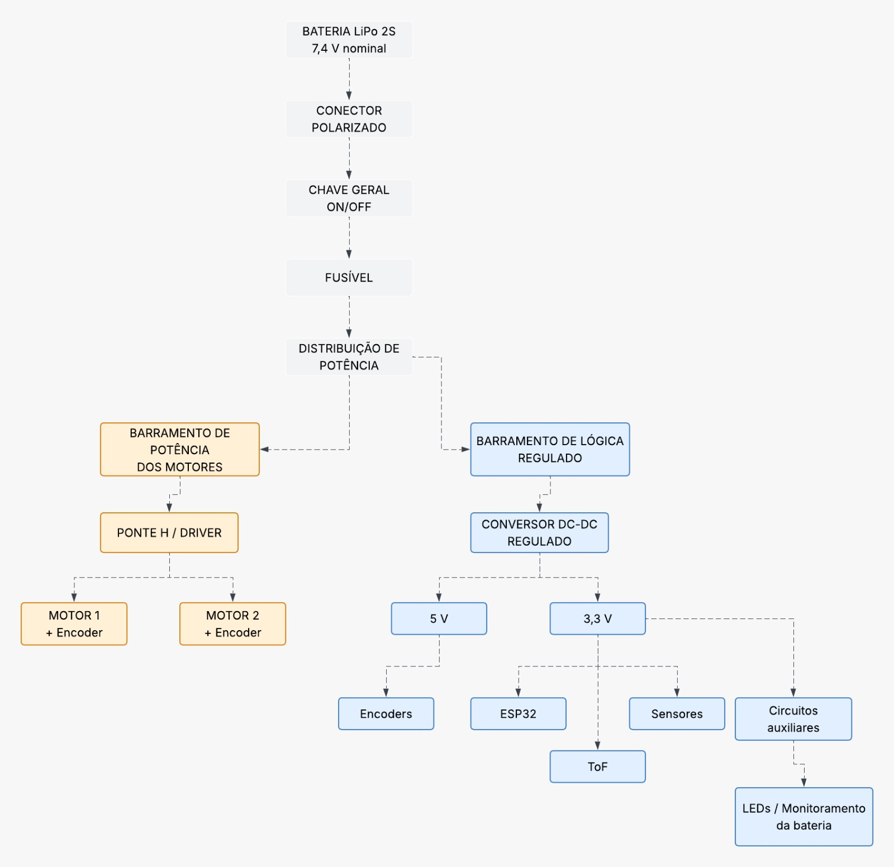
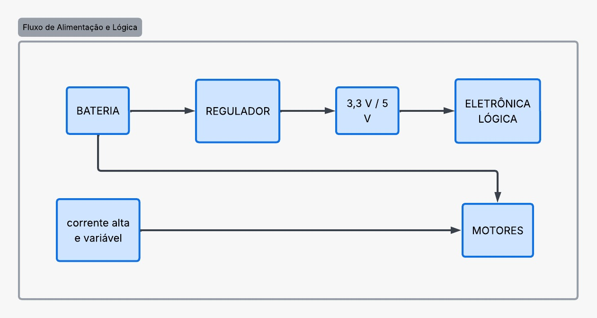
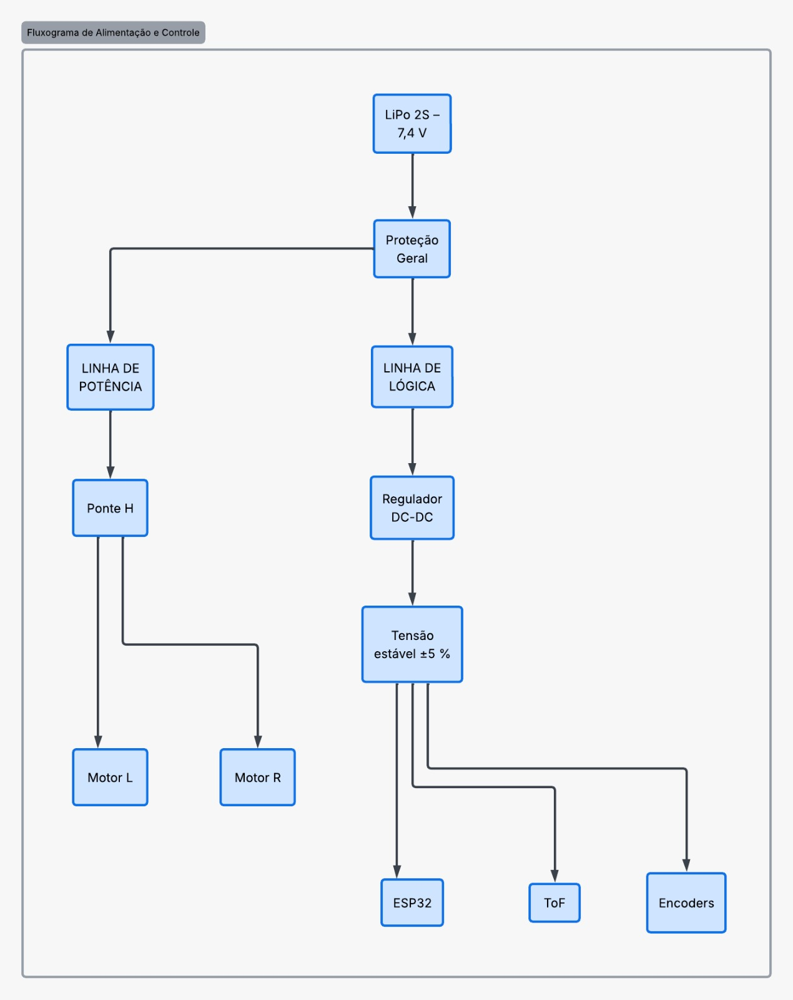

Projeto Conceitual de Energia¶
Dimensionamento Preliminar v1 — Bateria e Demanda Energética¶
Projeto Integrador 1 — 2026.2
Micromouse UnB — Grupo 1
Documento de apoio à issue: [AP5] Dimensionamento da Bateria e Proteções #19 e [AP5] Diagrama de Distribuição de Potência #18
Status do documento
Este documento apresenta uma estimativa conceitual preliminar do sistema de alimentação e está sujeito à revisão após a seleção dos componentes definitivos.
1. Objetivo e escopo¶
Este documento consolida o Dimensionamento Preliminar v1 do sistema de alimentação do Micromouse UnB — Grupo 1.
O objetivo desta etapa é:
- estimar a energia necessária para 15 minutos de navegação ativa;
- comparar diferentes condições de consumo;
- estabelecer uma faixa inicial de capacidade para uma bateria LiPo 2S;
- estruturar conceitualmente a distribuição de energia entre os subsistemas;
- identificar as informações necessárias para o dimensionamento definitivo.
O dimensionamento apresentado nesta versão é conceitual. Como os modelos definitivos de motores, driver, microcontrolador, sensores, reguladores e bateria ainda não foram selecionados, parte dos valores de corrente empregados constitui hipótese preliminar de engenharia.
Esses valores deverão ser posteriormente substituídos por dados provenientes dos respectivos datasheets e por medições experimentais realizadas no protótipo.
Limitação da V1
Nenhum valor desta versão deve ser interpretado como uma especificação final de compra.
O Dimensionamento Preliminar v1 tem como finalidade orientar a seleção dos componentes e permitir o avanço do projeto enquanto os modelos definitivos ainda estão em processo de escolha.
2. Requisitos do projeto que orientam o cálculo¶
O dimensionamento energético foi estruturado considerando os requisitos previamente estabelecidos para o subsistema de Energia e suas interfaces com Eletrônica e Software.
| Requisito | Implicação para o sistema de Energia |
|---|---|
| RNF-ENE01 | Garantir autonomia operacional contínua mínima de 15 minutos em navegação ativa, com sensores e comunicação funcionando. |
| RF-ENE02 | Realizar medição contínua da tensão do banco de baterias e disponibilizar essa informação para processamento e telemetria. |
| RF-ENE03 | Proteger a bateria contra descarga profunda, com desligamento da tração em menos de 200 ms após a detecção do limiar crítico. |
| RF-ELE01 / RF-ELE02 | Alimentar o sistema de sensoriamento de paredes em três direções e a odometria independente das duas rodas motrizes. |
| RF-SFT05 | Disponibilizar o nível/consumo da bateria como um dos parâmetros obrigatórios de telemetria. |
3. Premissas do Dimensionamento Preliminar v1¶
Para a realização dos cálculos preliminares foram adotadas as seguintes hipóteses:
- bateria prevista: LiPo 2S;
- tensão nominal do banco de baterias: 7,4 V;
- autonomia mínima considerada: 15 minutos;
- tempo equivalente:
- dois motores DC com encoder;
- uma ponte H capaz de controlar os dois motores;
- um microcontrolador da família ESP32, com comunicação Wi-Fi;
- três sensores de distância do tipo ToF:
- frontal;
- lateral esquerdo;
- lateral direito;
- dois encoders, um por roda motriz;
- indicadores visuais;
- circuito de monitoramento da bateria.
Os valores de corrente utilizados para motores, encoders, indicadores e circuito de monitoramento são estimativas preliminares e deverão ser revisados após a escolha dos componentes definitivos.
4. Modelo de cálculo energético¶
Para cada componente, a energia consumida durante uma execução de 15 minutos é estimada pela relação:
onde:
- \(E\) = energia consumida, em joules (J);
- \(V\) = tensão de operação, em volts (V);
- \(I\) = corrente média, em ampères (A);
- \(t\) = tempo de operação, em segundos (s).
A conversão da energia de joules para watt-hora é realizada por:
Como os cálculos consideram uma execução de:
a potência média equivalente de cada cenário pode ser obtida por:
5. Três cenários de consumo adotados¶
Devido à ausência dos modelos definitivos dos componentes, foram definidos três cenários de operação para avaliar a sensibilidade do dimensionamento às variações de corrente.
| Carga | Baixo | Nominal | Conservador |
|---|---|---|---|
| Cada motor DC (6 V) | 0,30 A | 0,50 A | 0,80 A |
| ESP32 + Wi-Fi (3,3 V) | 80 mA | 120 mA | 200 mA |
| Cada sensor ToF (2,8 V) | 12 mA | 19 mA | 25 mA |
| Cada encoder (5 V) | 5 mA | 10 mA | 20 mA |
| Driver ponte H — lógica (3,3 V) | 1,1 mA | 1,5 mA | 2,2 mA |
| LEDs/indicadores (3,3 V) | 10 mA | 20 mA | 40 mA |
| Monitor da bateria (7,4 V) | 0,5 mA | 1,0 mA | 2,0 mA |
Interpretação dos cenários
Baixo: representa uma condição de operação leve.
Nominal: constitui a principal referência utilizada no Dimensionamento Preliminar v1.
Conservador: considera correntes superiores para reduzir o risco de subdimensionamento enquanto os componentes definitivos ainda não são conhecidos.
6. Cálculo energético por cenário¶
6.1 Cenário baixo¶
| Componente | V | I total (A) | t (s) | E (J) | E (Wh) |
|---|---|---|---|---|---|
| 2 motores DC | 6,0 | 0,600 | 900 | 3240,00 | 0,9000 |
| ESP32 + Wi-Fi | 3,3 | 0,080 | 900 | 237,60 | 0,0660 |
| 3 sensores ToF | 2,8 | 0,036 | 900 | 90,72 | 0,0252 |
| 2 encoders | 5,0 | 0,010 | 900 | 45,00 | 0,0125 |
| Driver ponte H — lógica | 3,3 | 0,0011 | 900 | 3,27 | 0,0009 |
| LEDs/indicadores | 3,3 | 0,010 | 900 | 29,70 | 0,0083 |
| Monitor da bateria | 7,4 | 0,0005 | 900 | 3,33 | 0,0009 |
Energia total:
ou:
A potência média correspondente é:
6.2 Cenário nominal¶
| Componente | V | I total (A) | t (s) | E (J) | E (Wh) |
|---|---|---|---|---|---|
| 2 motores DC | 6,0 | 1,000 | 900 | 5400,00 | 1,5000 |
| ESP32 + Wi-Fi | 3,3 | 0,120 | 900 | 356,40 | 0,0990 |
| 3 sensores ToF | 2,8 | 0,057 | 900 | 143,64 | 0,0399 |
| 2 encoders | 5,0 | 0,020 | 900 | 90,00 | 0,0250 |
| Driver ponte H — lógica | 3,3 | 0,0015 | 900 | 4,46 | 0,0012 |
| LEDs/indicadores | 3,3 | 0,020 | 900 | 59,40 | 0,0165 |
| Monitor da bateria | 7,4 | 0,0010 | 900 | 6,66 | 0,0019 |
Energia total:
ou:
A potência média correspondente é:
6.3 Cenário conservador¶
| Componente | V | I total (A) | t (s) | E (J) | E (Wh) |
|---|---|---|---|---|---|
| 2 motores DC | 6,0 | 1,600 | 900 | 8640,00 | 2,4000 |
| ESP32 + Wi-Fi | 3,3 | 0,200 | 900 | 594,00 | 0,1650 |
| 3 sensores ToF | 2,8 | 0,075 | 900 | 189,00 | 0,0525 |
| 2 encoders | 5,0 | 0,040 | 900 | 180,00 | 0,0500 |
| Driver ponte H — lógica | 3,3 | 0,0022 | 900 | 6,53 | 0,0018 |
| LEDs/indicadores | 3,3 | 0,040 | 900 | 118,80 | 0,0330 |
| Monitor da bateria | 7,4 | 0,0020 | 900 | 13,32 | 0,0037 |
Energia total:
ou:
A potência média correspondente é:
No cenário nominal, os dois motores respondem por aproximadamente 89% da energia estimada.
Esse resultado demonstra que a escolha dos motores e, principalmente, a corrente real durante a navegação constituem as variáveis de maior impacto no dimensionamento definitivo do sistema de Energia.
7. Perdas e margem de engenharia¶
A energia calculada diretamente nas cargas não considera todas as perdas presentes no sistema de alimentação.
Entre essas perdas estão:
- reguladores de tensão;
- conversores DC-DC;
- ponte H;
- trilhas da PCB;
- cabeamento;
- conectores;
- dispositivos de proteção.
Como esses componentes ainda não foram selecionados, o Dimensionamento Preliminar v1 considera provisoriamente um acréscimo de 15% sobre a energia das cargas para representar as perdas do sistema.
Após essa correção, é aplicada uma margem adicional de engenharia de 30%, destinada a absorver as incertezas associadas aos componentes ainda não definidos.
Margens adotadas
Os valores de 15% para perdas e 30% para margem de engenharia são hipóteses desta etapa conceitual.
Eles deverão ser reavaliados no dimensionamento definitivo utilizando as eficiências reais dos conversores, do driver e dos demais componentes selecionados.
| Cenário | Energia nas cargas (Wh) | Após +15% de perdas (Wh) | Após +30% de margem (Wh) |
|---|---|---|---|
| Baixo | 1,014 | 1,166 | 1,516 |
| Nominal | 1,683 | 1,936 | 2,517 |
| Conservador | 2,706 | 3,112 | 4,045 |
Para o cenário conservador:
8. Conversão para capacidade da bateria LiPo 2S¶
Considerando uma bateria LiPo 2S com tensão nominal de:
a capacidade equivalente pode ser determinada por:
Para converter o resultado para miliampère-hora:
Aplicando essa relação aos três cenários:
| Cenário | Energia de projeto (Wh) | Capacidade equivalente em 7,4 V |
|---|---|---|
| Baixo | 1,516 | ≈ 205 mAh |
| Nominal | 2,517 | ≈ 340 mAh |
| Conservador | 4,045 | ≈ 547 mAh |
Resultado-chave
O cenário conservador resulta em uma capacidade mínima preliminar de aproximadamente 547 mAh, já considerando as hipóteses de perdas e margem de engenharia.
Esse valor não representa ainda a capacidade final da bateria a ser adquirida.
9. Faixa preliminar de bateria¶
Com base no cenário conservador, estabelece-se inicialmente como faixa de estudo uma bateria:
LiPo 2S entre 650 mAh e 1000 mAh.
Essa faixa fornece reserva energética sobre a capacidade mínima preliminar calculada e permite que a equipe avalie simultaneamente:
- autonomia;
- corrente disponível;
- massa;
- volume;
- dimensões;
- conector;
- integração estrutural ao chassi.
| Bateria considerada | Tensão nominal | Capacidade | Energia nominal |
|---|---|---|---|
| LiPo 2S — 650 mAh | 7,4 V | 0,650 Ah | 4,81 Wh |
| LiPo 2S — 850 mAh | 7,4 V | 0,850 Ah | 6,29 Wh |
| LiPo 2S — 1000 mAh | 7,4 V | 1,000 Ah | 7,40 Wh |
Para esta etapa do projeto, uma bateria de aproximadamente 850 mAh é utilizada apenas como referência conceitual intermediária.
A decisão definitiva deverá considerar simultaneamente:
- consumo energético;
- corrente de pico;
- corrente de stall dos motores;
- C-rating;
- massa;
- dimensões;
- conector;
- limitações estruturais do robô.
10. Capacidade energética e capacidade de fornecimento de corrente¶
Os cálculos anteriores verificam principalmente a energia necessária para atender ao requisito de autonomia.
Entretanto, possuir energia suficiente não garante, por si só, que a bateria seja capaz de fornecer as correntes instantâneas exigidas pelos motores.
Durante:
- partida;
- aceleração;
- frenagem;
- mudança de sentido;
- eventual travamento das rodas;
a corrente exigida pelos motores pode ser significativamente superior à corrente média utilizada no cálculo energético.
A corrente máxima teórica disponibilizada por uma bateria pode ser relacionada à sua capacidade e ao respectivo C-rating:
Como exemplo exclusivamente matemático, para uma bateria de:
e classificação:
teríamos:
Esse exemplo não significa que o projeto necessite de uma bateria de 20C.
O C-rating mínimo somente poderá ser determinado após a identificação da corrente de stall dos motores selecionados.
Pendência crítica
A corrente de stall dos motores é uma informação indispensável para:
- definir o C-rating mínimo da bateria;
- dimensionar o fusível;
- verificar a corrente admissível da ponte H;
- verificar conectores;
- dimensionar condutores e trilhas de potência.
11. Arquitetura elétrica conceitual associada ao dimensionamento¶
A arquitetura elétrica deverá separar a linha de potência destinada aos motores da alimentação utilizada pela eletrônica lógica e pelos sensores.
Essa separação tem como objetivo reduzir a propagação de:
- picos de corrente;
- ruído elétrico;
- transitórios de comutação;
- quedas temporárias de tensão;
para os circuitos mais sensíveis do robô.
A estrutura conceitual pode ser resumida da seguinte maneira:
LiPo 2S — 7,4 V nominal
│
▼
Conector polarizado
│
▼
Chave geral
│
▼
Fusível
│
▼
Distribuição de potência
│
├──► Barramento de potência ──► Ponte H ──► Motores
│
└──► Barramento regulado ──► ESP32 + sensores + encoders
11.1 Arquitetura geral do sistema de alimentação¶
O diagrama a seguir apresenta o caminho conceitual completo da energia no Micromouse.
A bateria LiPo 2S alimenta inicialmente os dispositivos gerais de conexão, seccionamento e proteção:
- conector polarizado;
- chave geral;
- fusível.
Somente após essa etapa ocorre a distribuição da energia para os dois grandes grupos de cargas:
- barramento de potência dos motores;
- barramento regulado de lógica e sensoriamento.

Figura 1 — Arquitetura conceitual detalhada do sistema de alimentação do Micromouse.
Fonte: elaboração da equipe do projeto Micromouse UnB — Grupo 1 (2026).
Tensões indicadas no diagrama
Os níveis intermediários de 5 V e 3,3 V apresentados são conceituais nesta etapa.
A configuração definitiva dos barramentos dependerá dos modelos selecionados para ESP32, sensores, encoders, driver e demais componentes.
11.2 Separação entre potência e lógica e imunidade a transitórios¶
Os motores representam a principal carga energética do sistema e apresentam comportamento elétrico altamente variável.
Durante eventos como:
partida → aceleração → frenagem → mudança de sentido → eventual travamento
podem ocorrer correntes significativamente superiores à corrente média de navegação.
Por esse motivo, a eletrônica lógica deverá utilizar uma alimentação regulada dedicada, enquanto os motores permanecem associados ao barramento de potência de corrente elevada e variável.

Figura 2 — Separação conceitual entre alimentação lógica regulada e cargas de potência.
Fonte: elaboração da equipe do projeto Micromouse UnB — Grupo 1 (2026).
Essa separação tem como objetivo reduzir a propagação dos transitórios produzidos pelos motores para o ESP32 e para os sensores.
No projeto definitivo deverão ser dimensionados:
- regulador dedicado para a eletrônica de controle;
- capacitores de desacoplamento próximos aos circuitos integrados;
- capacitor de maior capacidade próximo ao driver dos motores;
- caminhos separados para correntes de potência e lógica;
- retorno de corrente adequadamente organizado;
- trilhas, conectores e condutores compatíveis com a corrente máxima prevista.
O objetivo é manter a alimentação lógica dentro da tolerância estabelecida mesmo durante transitórios causados pelos motores.
11.3 Representação simplificada do fluxo de alimentação e controle¶
A representação seguinte sintetiza a arquitetura elétrica em dois ramos principais após a etapa de proteção geral.
No ramo de potência:
proteção → linha de potência → ponte H → motores
No ramo lógico:
proteção → linha de lógica → regulador DC-DC → ESP32, sensores e encoders

Figura 3 — Fluxograma simplificado de alimentação, proteção e distribuição entre potência e lógica.
Fonte: elaboração da equipe do projeto Micromouse UnB — Grupo 1 (2026).
Na representação, o bloco Proteção Geral sintetiza os dispositivos de proteção e seccionamento localizados antes da divisão entre os barramentos.
Os valores definitivos de:
- tensão;
- corrente;
- reguladores;
- proteções;
- condutores;
serão consolidados após a seleção dos dispositivos reais e a substituição das hipóteses desta V1 por dados de datasheet e ensaios.
11.4 Monitoramento da bateria¶
A tensão da bateria deverá ser monitorada pelo sistema embarcado.
Entre as alternativas conceituais estão:
- divisor resistivo conectado ao ADC do microcontrolador;
- circuito integrado dedicado de monitoramento;
- sensor combinado de tensão e corrente.
O sistema deverá disponibilizar ao firmware informações suficientes para:
- medir a tensão da bateria;
- registrar o tempo de funcionamento;
- estimar o estado energético;
- alimentar a telemetria;
- identificar condição de subtensão;
- comandar o desligamento da tração quando necessário.
O mecanismo definitivo deverá atender ao requisito de desativação da tração em menos de 200 ms após a identificação do limiar crítico de subtensão.
12. Dados necessários para o dimensionamento definitivo¶
Após a seleção dos componentes do protótipo, o Dimensionamento Preliminar v1 deverá ser atualizado utilizando dados reais provenientes de datasheets e medições.
As informações necessárias são apresentadas a seguir.
| Item | Informações necessárias |
|---|---|
| Motores DC — prioridade máxima | Modelo exato, tensão nominal, corrente sem carga, corrente nominal sob carga, corrente de stall, RPM, relação de redução e torque. |
| Encoders | Modelo ou identificação do encoder integrado, tensão de alimentação, tipo de saída e consumo. |
| Driver / ponte H | Modelo, tensão VM, tensão lógica, corrente contínua por canal, corrente de pico, RDS(on) ou queda de tensão e limites térmicos. |
| Microcontrolador / placa | Modelo exato da placa, incluindo a variante específica do ESP32 utilizada. |
| Sensores de distância | Modelo, quantidade e identificação se são sensores isolados ou módulos/breakouts. |
| Outros sensores | IMU, giroscópio, sensor de corrente/tensão ou qualquer sensor adicional. |
| Reguladores / conversores | Modelo, tensão de entrada, tensão de saída, corrente máxima e curva de eficiência. |
| Bateria candidata | Marca/modelo, configuração 2S, capacidade, C-rating, corrente máxima, massa, dimensões e conector. |
| BMS / proteção | Modelo, corrente máxima, limites de sobrecarga/subtensão e consumo próprio, caso utilizado. |
| Monitoramento da bateria | Divisor resistivo, CI monitor, sensor de corrente/tensão ou arquitetura escolhida. |
| LEDs e buzzer | Quantidade e corrente prevista de cada indicador ou atuador auxiliar. |
| Módulos adicionais | Memória, cartão SD, rádio separado, conversores de nível, display ou qualquer carga adicional. |
| Conectores e fiação | Tipo de conector da bateria, bitola e comprimento aproximado dos condutores de potência. |
| Fusível | O valor definitivo será dimensionado após o conhecimento das características dos motores, driver, bateria e condutores. |
Ordem recomendada de definição dos componentes¶
Para reduzir retrabalho no dimensionamento energético, recomenda-se a seguinte sequência:
MOTORES
↓
DRIVER
↓
PLACA ESP32
↓
SENSORES
↓
REGULADORES
↓
BATERIA
Os motores possuem prioridade porque representam a principal parcela do consumo e determinam parte significativa das exigências de corrente do restante do sistema.
13. Síntese do Dimensionamento Preliminar v1¶
| Parâmetro | Resultado preliminar |
|---|---|
| Autonomia considerada | 15 min / 900 s / 0,25 h |
| Bateria considerada | LiPo 2S — 7,4 V nominal |
| Energia — cenário baixo | 1,014 Wh antes das margens |
| Energia — cenário nominal | 1,683 Wh antes das margens |
| Energia — cenário conservador | 2,706 Wh antes das margens |
| Hipótese de perdas | +15% |
| Margem adicional de engenharia | +30% após as perdas |
| Energia conservadora de projeto | ≈ 4,045 Wh |
| Capacidade mínima preliminar | ≈ 547 mAh |
| Faixa inicial para estudo | 650 a 1000 mAh |
| Referência conceitual intermediária | ≈ 850 mAh |
| Principal incerteza | Consumo e corrente de stall dos motores |
14. Conclusão¶
O Dimensionamento Preliminar v1 indica que uma bateria LiPo 2S, com tensão nominal de 7,4 V e capacidade situada inicialmente entre 650 mAh e 1000 mAh, constitui um ponto de partida plausível para o desenvolvimento do Micromouse.
O cenário conservador resultou em uma necessidade energética de aproximadamente:
correspondente a uma capacidade preliminar mínima de:
Considerando a necessidade de reserva energética, uma bateria de aproximadamente 850 mAh é utilizada nesta etapa apenas como referência conceitual.
A seleção definitiva somente poderá ser realizada após a definição dos principais componentes do sistema, especialmente dos motores.
Na versão definitiva deverão ser avaliados:
- corrente média real;
- corrente de partida;
- corrente de stall;
- C-rating;
- eficiência dos reguladores;
- perdas na ponte H;
- consumo efetivo dos sensores;
- massa e dimensões da bateria;
- corrente admissível dos condutores e conectores;
- dimensionamento das proteções elétricas.
Portanto, a V1 não estabelece uma bateria final de compra, mas fornece uma base quantitativa para orientar as próximas decisões de engenharia.
15. Referências internas do projeto¶
- Documento de Requisitos do Projeto — Micromouse (PI1 2026.2 — Grupo 1).
- Termo de Abertura do Projeto (TAP) — Micromouse UnB — Grupo 1.
- Issue
[AP5] Dimensionamento da Bateria e Proteções #19. - Issue
[AP5] Diagrama de Distribuição de Potência #18. - Arquivo
4.2 - Projeto conceitual de energia.md.